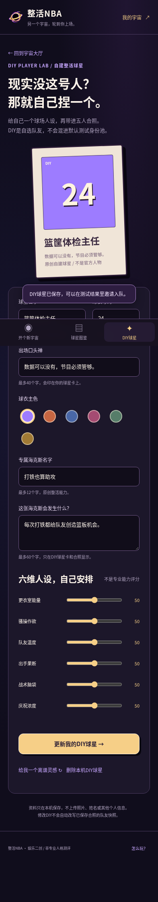
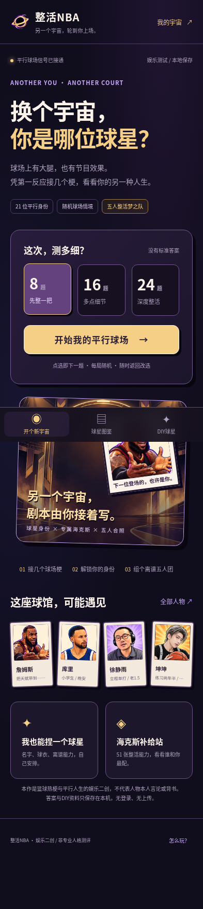
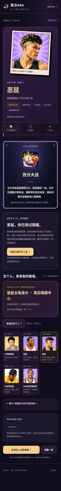
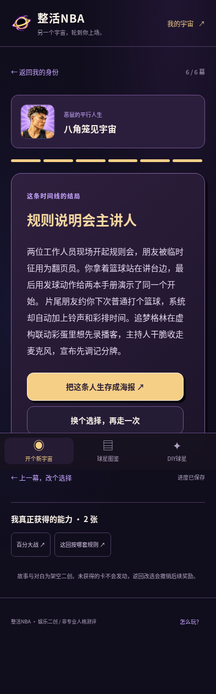

868 KiB
SHA256 4937489c5be9928e937893949a62c478e341b112a343cb3e7b8c8918b0f41d7dV13 紫金漫画风 · 篮球独立娱乐测试
回答球场日常问题，看看你是哪位平行球星；获得整活海克斯，组出五人团，还能DIY自己的球星。21 位人物、132 道题、51 张海克斯；新增24道球场题。
手机直接开始玩 ↗V13 原版小红书包 ↓微信包是原生 WXML／WXSS／JS 工程，解压后用微信开发者工具导入 project.config.json 所在目录。它不是微信聊天中点击安装的文件，正式预览需配置自己的 AppID。
868 KiB
SHA256 4937489c5be9928e937893949a62c478e341b112a343cb3e7b8c8918b0f41d7d835 KiB
SHA256 3a207f014ea41f154445fb3811e952d232b1d356a43e996d7137d2f92ebcca81834 KiB
SHA256 5b90ade3f86f92108c5e424e5fbea6213ab98599e737c2637287b35fd8d7cfae1470 KiB
SHA256 4447aaa17552dc194be83b7c783b7e669192564fdc519a2180de933caab56f1f10 组普通浏览器流程已通过，截图为手机视口模拟。微信开发者工具编译、正式AppID、Android/iOS微信真机与平台审核仍待验证。小红书ZIP须上传创服平台，先做平台模拟器完整验证，再分别用Android和iOS真机扫码同一ZIP；普通浏览器或SDK模拟不等于原生验收。Chrome61 CSS与实机性能未实测。
全部答案、DIY球星和阵容保存在本机。DIY球星作为自选队友，不篡改答题匹配身份；娱乐创作，不代表球星真实经历或本人发言。



